Noterindas · Seafood Commerce · 2025
Seasonality Commerce · Information Asymmetry · Conversion
제철 어종 재구매율 최적화 케이스
배달앱 수수료와 높은 이탈률로 악화되던 수익구조를 개선하기 위해, 수산물 구매에서 가장 큰 장벽이던 '제철·신선도 정보 비대칭'을 자사몰 경험 설계로 해소한 프로젝트입니다.
Noterindas · Seafood Commerce · 2025
배달앱 수수료와 높은 이탈률로 악화되던 수익구조를 개선하기 위해, 수산물 구매에서 가장 큰 장벽이던 '제철·신선도 정보 비대칭'을 자사몰 경험 설계로 해소한 프로젝트입니다.
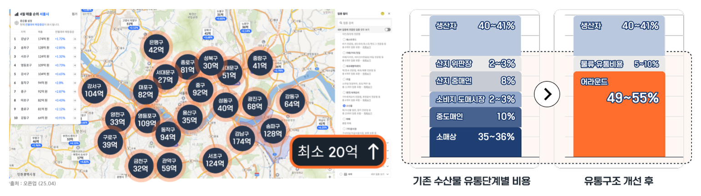
어라운드는 자체 상품 판매로 원산지 유통 구조를 7단계에서 2단계로 단축하며 가격 경쟁력을 확보했지만, 실제 판매의 상당 부분이 배달앱에 묶여 있어 수수료 20%가 원가 절감 효과를 상쇄하고 있었습니다.
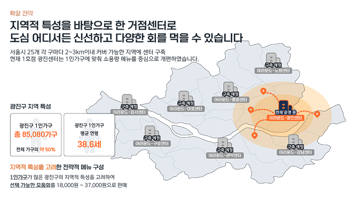
광진구·성동구·동대문구 등 서울 내 지점 확장을 준비하면서, 배달 가능 주소에 종속되지 않는 온라인 통합 주문 시스템이 사업적으로 필수인 상황이었습니다.
Business Insight: 유통 단계 축소로 확보한 경쟁력은 존재했지만, 이를 수익으로 연결하려면 반드시 플랫폼 의존도를 낮추고 자사몰 전환율을 높여야 했습니다.
Validation Plan: 제철 콘텐츠 노출군과 비노출군의 장바구니·CVR 차이를 비교하는 A/B 테스트, 장바구니 증가 코호트의 재구매 추적, 퍼널 단계별 드롭오프 분석으로 사업 임팩트를 연결했습니다.
| 유저 세그먼트 | 제철 정보 민감도 | 구매 빈도 | 장바구니 이탈률 | LTV 잠재력 | 선택 피로도 | 전략 우선순위 |
|---|---|---|---|---|---|---|
2인 식사 (반주)선정 |
높음 | 주 1–2회 | 72% | ★★★★★ | 높음 | ★ Primary Target |
4인 이상 이벤트 |
중간 | 월 1–2회 | 65% | ★★★★★ | 매우 높음 | Secondary |
단품 어종 구매자 |
낮음 | 월 2–3회 | 45% | ★★★★★ | 낮음 | 3순위 |
신규 자사몰 MVP 유저의 88%가 최종 구매 전 이탈했습니다. 배달앱 유입 유저 이탈률 78%보다 더 높았고, 이는 단순 유입 부족이 아니라 구매 결정 단계의 심리적 허들이 더 컸음을 시사했습니다.
원인 분석 결론:
유저는 구매 의사는 있었지만, 수산물 특유의 제철성과 신선도에 대한 정보 비대칭 때문에
실패 리스크를 크게 느끼고 있었습니다. 정보 부족이 더 직접적으로 드러나는 자사몰에서 이탈이 더 높았습니다.
판매자가 알고 있는 만큼 구매자에게 제철 어종 정보가 잘 전달되지 않아
유저 입장에서는 유입부터 주문까지의 정보 수집 단계에서 정보 공백이 있다.
핵심 지표를 어떻게
개선할 수 있을까?
판매자가 보유한 어종별 제철 시기와 상세 주문 정보를 사용자가 한눈에 예측 가능하게 시각화하면, 구매자는 실패 리스크를 낮게 인식하고 장바구니 담기와 최종 주문전환이 모두 상승할 것이다.
| Component | Problem | Hypothesis | Validation KPI |
|---|---|---|---|
| Home | 후기 중심 구조로 제철 정보 노출 부족 | 제철 정보를 1-depth 전면 배치 | CTR +10%p |
| Cart | 결정 직전 상품 확신 부족 | 주문 정보와 신뢰 신호를 동시 배치 | CVR +12%p |
| Repeat | 다시 방문할 이유가 약함 | 제철 정보 자체를 반복 방문 이유로 설계 | 30일 재구매율 32% |
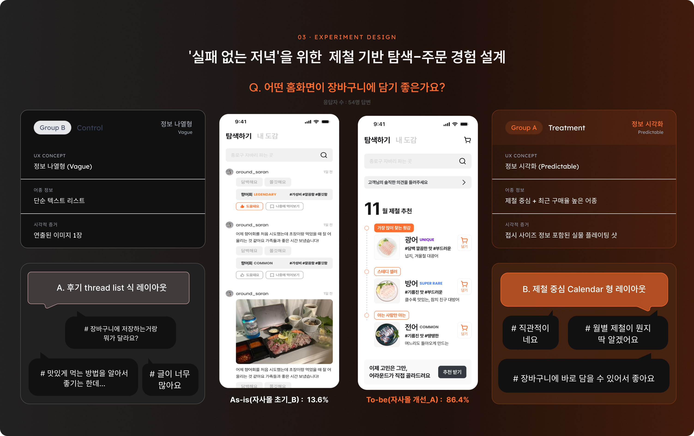
솔루션 방향: 구매 결정 시점의 탐색 비용을 줄이는 것이 핵심이었기 때문에, 후기보다 제철 정보의 우선순위를 높이고, 선택·신뢰·주문 정보가 한 흐름 안에서 연결되도록 구조를 재설계했습니다.
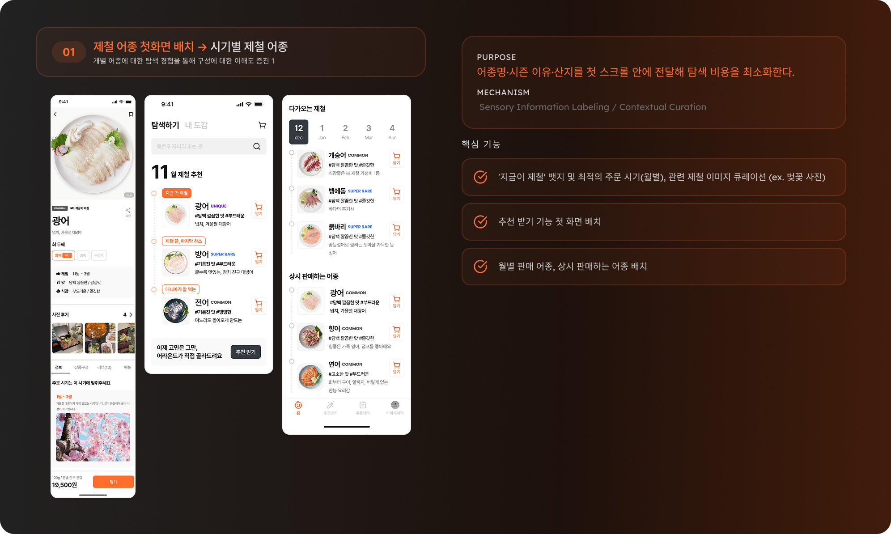
Image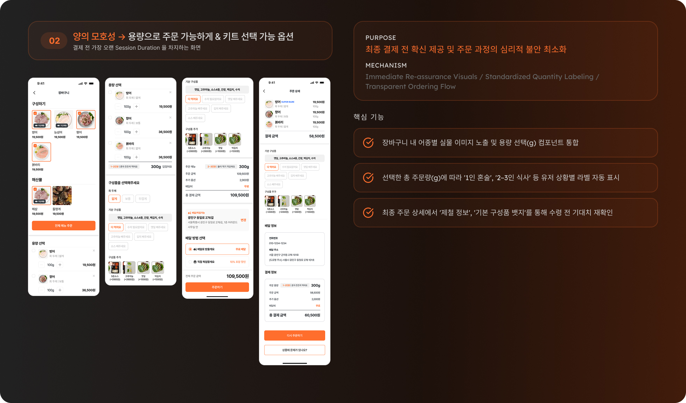
Image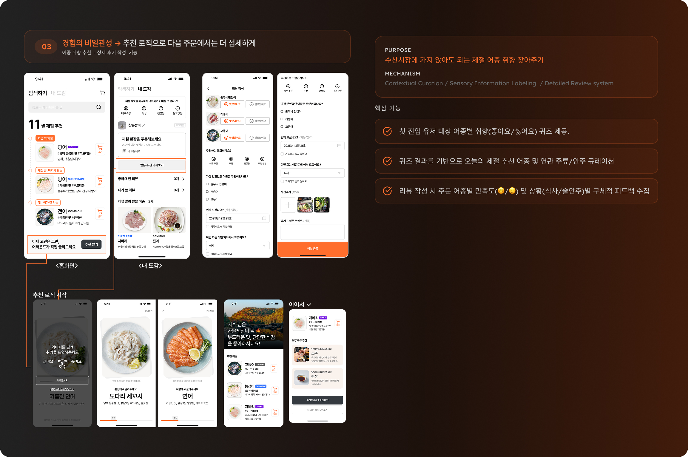
Image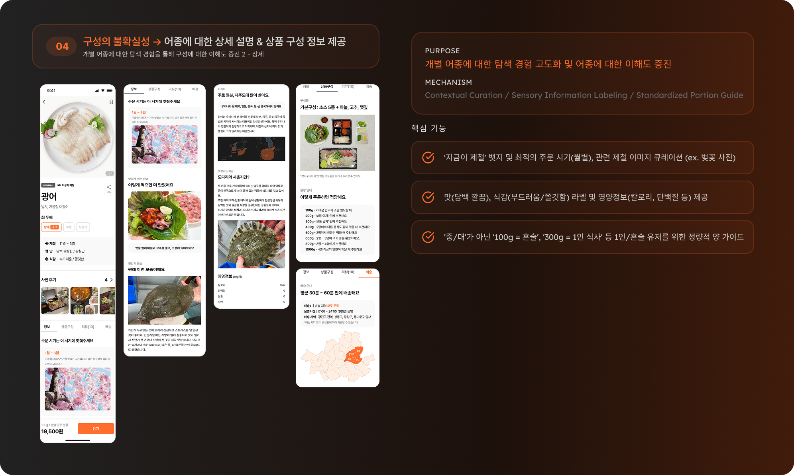
Image2025.06–2025.10 동안 7차 이터레이션을 통해 정보 수집부터 런칭까지 전 과정을 직접 실행했습니다. 유저 인터뷰 · A/B 테스트 · 데이터 검증을 반복하며 제품을 점진적으로 고도화했습니다.
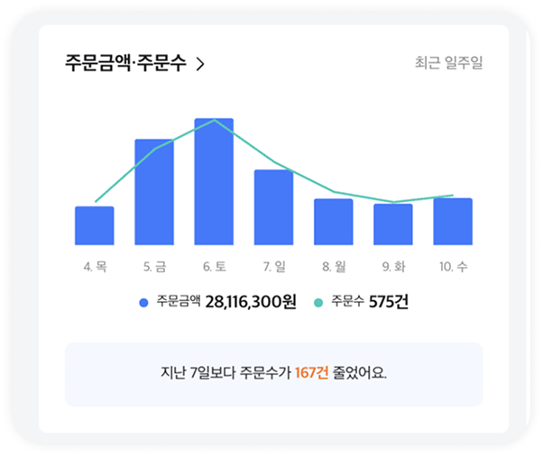
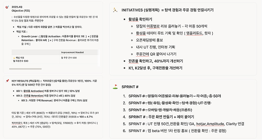
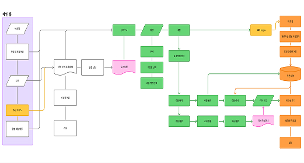
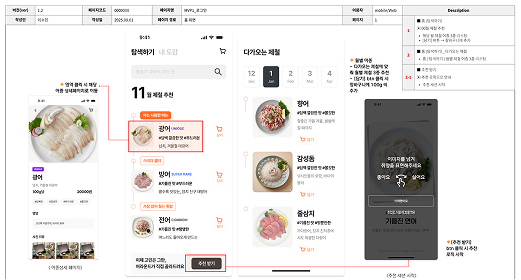
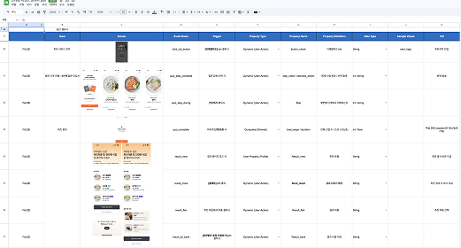
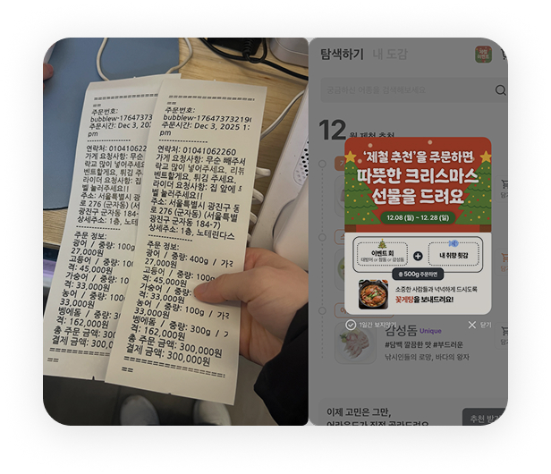
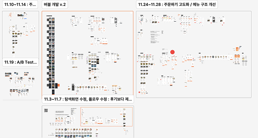
| Input | Validation | Output |
|---|---|---|
| 제철 정보 조회 증가 | CTR +10%p | 장바구니 진입 증가 |
| 탐색 비용 감소 | CVR +12%p | 주문 완료율 상승 |
| 신뢰 기반 구매 경험 | 30일 재구매 32% | 반복 방문 및 수익성 개선 |
Core Achievement: 수산물 커머스에서 핵심은 기능 추가가 아니라, 사용자가 모르던 정보를 예측 가능한 신뢰 신호로 바꾸는 것이었습니다. 제철 정보 경험은 조회에서 장바구니, 결제, 재구매까지 이어지는 퍼널을 실제로 개선했습니다.
높은 이탈률만으로는 답을 찾을 수 없었습니다. 인터뷰를 통해 사용자의 핵심 심리가 정보 부족으로 인한 실패 불안임을 파악했고, 이를 다시 CTR·CVR로 검증하는 구조를 학습했습니다.
기술 구현 자체보다 중요한 것은 도메인 안에서만 성립하는 불확실성을 해소하는 일이었습니다. 수산물 커머스에서는 제철·신선도 정보가 바로 전환의 레버였습니다.
운영팀과는 데이터 업데이트 프로세스를, 디자인팀과는 신뢰 시각화 컴포넌트를, 외부 파트너와는 실제 운영 가능 구조를 맞췄습니다. 실험과 검증을 반복하는 구조가 협업의 기준점이 되었습니다.
이번 프로젝트는 단순 웹 개선이 아니라 오프라인 매장과 연결되는 주문 시스템 구조를 설계한 경험이었습니다. 서비스가 실제로 굴러가고 수익성에 기여하도록 만드는 관점을 강화했습니다.